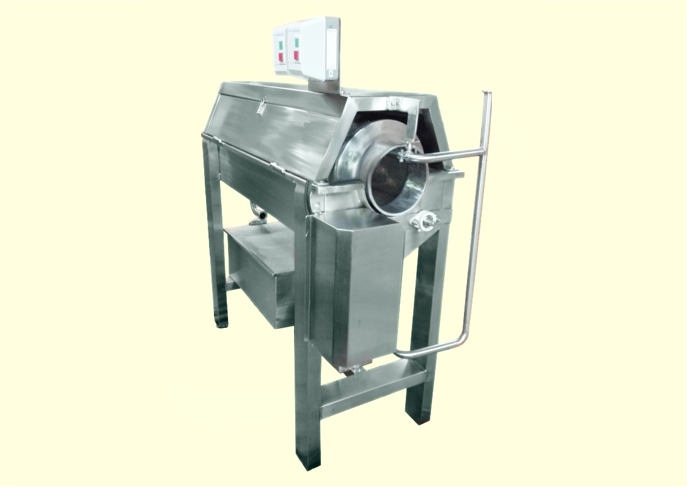
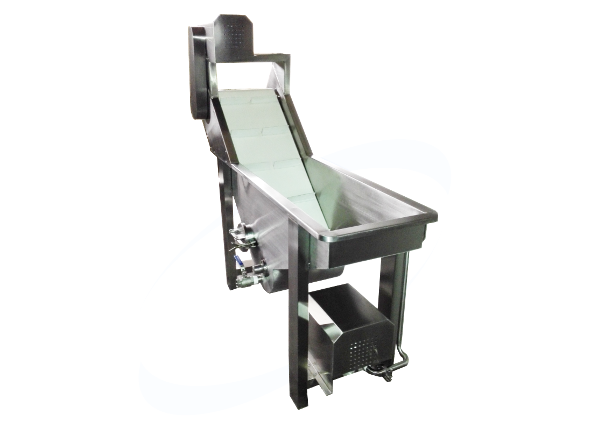
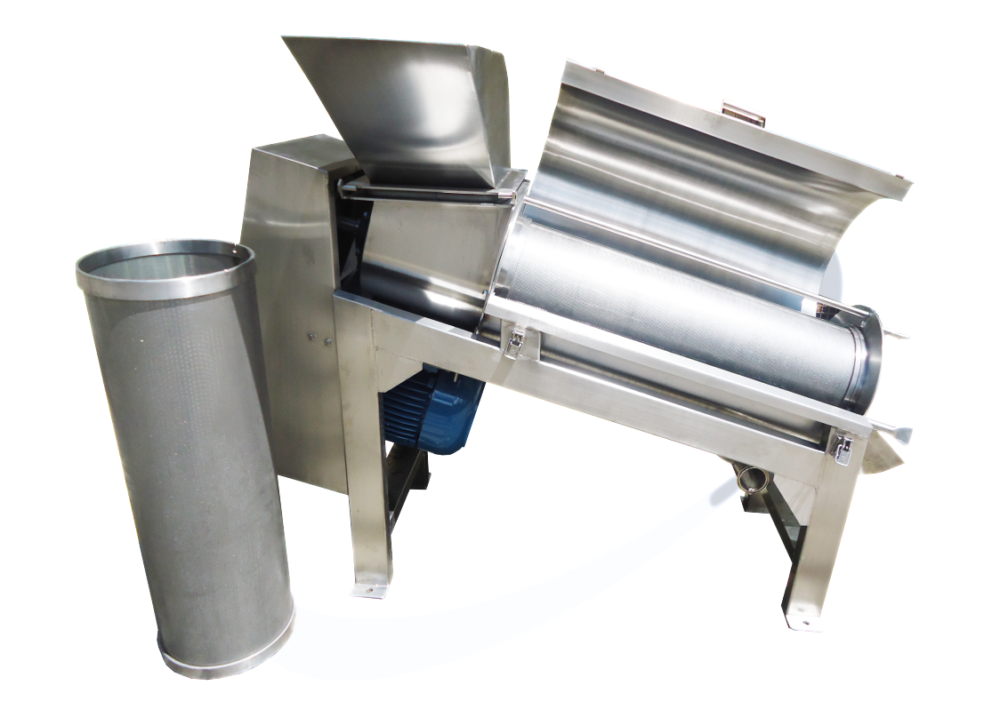
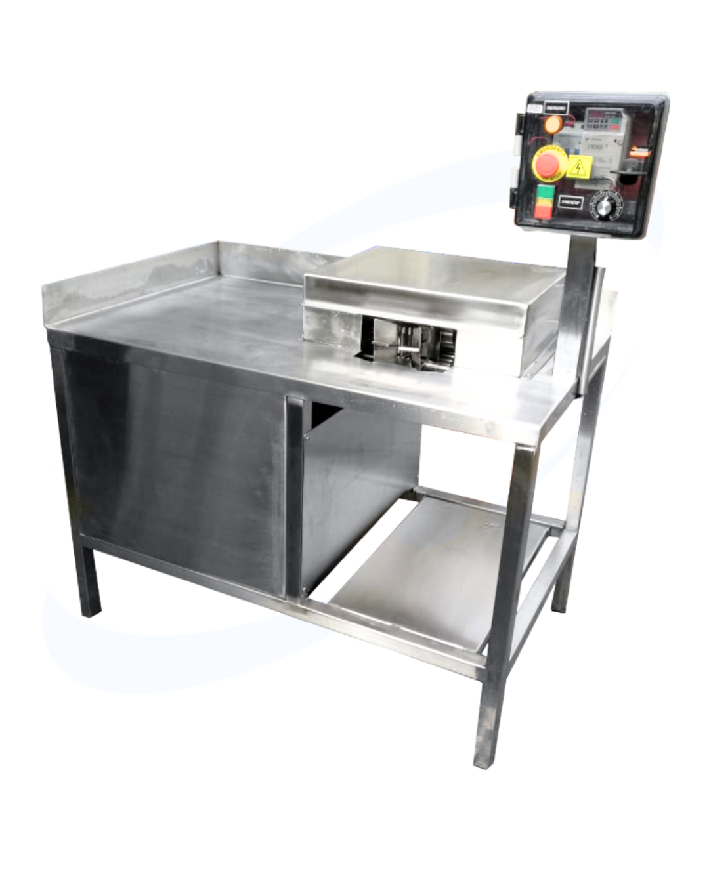
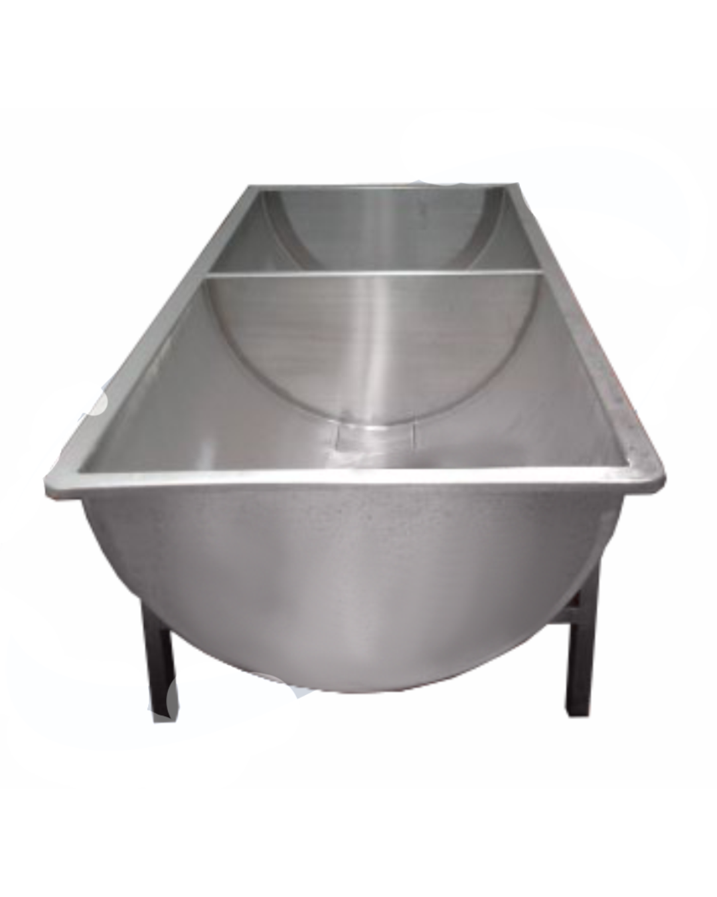

Nuestros Productos
Descubre nuestra línea completa de máquinas agroindustriales de última generación, diseñadas para optimizar tu producción y maximizar la eficiencia en el campo.

LAVADORA POR CEPILLADO
Durante la limpieza, las frutas y verduras giran continuamente en todas las direcciones, lo que las cepilla y roza simultáneamente. El efecto impulsor es bueno, para eliminar con eficacia suciedad y residuos de pesticida. Capacidad desde 100 Kg/h hasta 3 Ton/h.

LAVADORA DE TAMBOR
Se utiliza en la industria para realizar el lavado de múltiples productos como zanahorias, pepinos, cebollas, papa etc. Su tambor interno tiene una acción giratoria que limpia una superficie abrasiva. El flujo de producto a través del tambor se controla por medio de cuatro etapas impulsoras que en combinación con optimizar el lavado y la limpieza de todos los productos. Capacidad: 100 Kg a 3 Ton/h.

LAVADORA POR INMERSIÓN
Equipo utilizado para pre-lavar frutas y hortalizas, removiendo la parte gruesa de las impurezas, por medio de burbujas que resultan de la aplicación que se genera dentro del tanque para dar solapadores que producen turbulencia. Se manejan capacidades entre 100 Kg/h hasta 3 Ton/h.

DESPULPADORA 2TON/H
Este equipo se utiliza para eliminar partículas como semillas y cáscaras, de diferentes tipos de fruta obteniendo así pulpa de alta calidad para preparar jugos, mermeladas, néctar y compotas. Capacidad 2 Ton /h.

PELADORA DE SÁBILA
Máquina utilizada para retirar la cáscara de la hoja de sábila realizando la extracción de gel.

TANQUE LAVADO MANUAL
Esta unidad es ideal para realizar la desinfección manual de frutas y hortalizas de manera manual, empleando y aplicando soluciones desinfectantes (como cloro, ácido peracético u otros) en un entorno controlado y accesible para el operario, asegurando una limpieza profunda que reduce la carga microbiana y mejora la inocuidad del producto final.
¿Necesitas una solución personalizada?
Nuestro equipo de expertos puede ayudarte a encontrar la máquina perfecta para tus necesidades específicas.